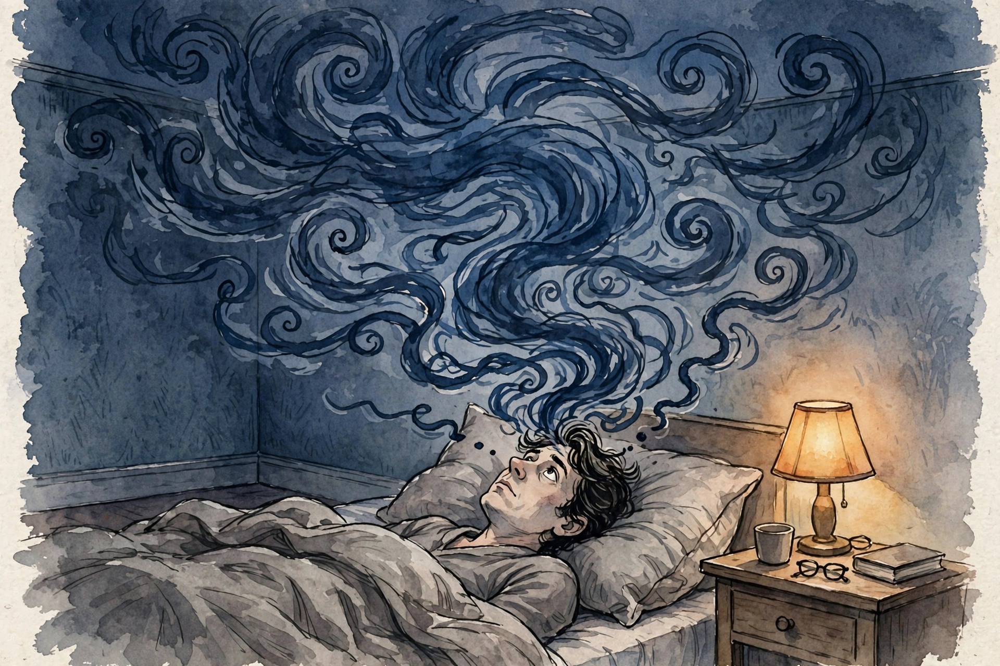

Huberman Lab · Episode Companion
How to Control Your Inner Voice
Dr. Ethan Kross, University of Michigan psychologist and author of Chatter, on the voice in your head: where it comes from, why it turns cruel at 2 a.m., and the science-backed tools that turn its volume down. His own toolkit runs on distance, perspective, and a carefully chosen advisory board.

Illustration. The 2 a.m. chatter: a storm the morning will not remember. AI-generated watercolor made for this page.
Watch. The official Huberman Lab episode video. Use the chapter menu above to move through this companion as you listen.
The Wisdom Index: every nugget in this companion
~00:01
Intro: The Voice in the Head
Huberman introduces Dr. Ethan Kross, professor of psychology at the University of Michigan, director of the Emotion and Self-Control Laboratory, and author of the bestseller Chatter, on the voice in our head. The episode was recorded late at night, Huberman notes, wearing red-lens glasses to protect his sleep from the studio lights.
The subject is the inner voice everyone carries. It ranges from encouragement to discouragement, repeats itself intrusively, and shapes emotional state, confidence, anxiety, and achievement. Kross's lab studies where the voice comes from and whether it can, and should, be controlled.
~00:28
Expressive Writing: The Pennebaker Effect
Some tools are effortful, Kross says, and expressive writing is the prime example. The protocol comes from James Pennebaker: sit down and let yourself go for 15 to 20 minutes a day, for 1 to 3 days, writing freely about a difficult experience. Hundreds of studies support it. He calls it a remarkably wonderful, essentially side-effect-free intervention for the curveballs life throws.
His lab found it moved the needle on anxiety, yet people underuse it, largely because it demands effort. The writing forces structure onto unstructured feeling, which is exactly what chatter resists.
The expressive-writing dose
Protocol from the Pennebaker literature as described in the episode.
Source: Huberman Lab, How to Control Your Inner Voice, ~00:28. The Pennebaker writing protocol and study count per Kross.
Nugget 6 · Effort
Write it out
What happened. Fifteen to twenty minutes of free writing a day for one to three days eases anxiety across hundreds of studies, yet people avoid it because it takes effort.
Why it matters. The best tool is the one you will not do. Effort is the real price of the intervention, and it must be budgeted like one.
The principle. Schedule the effortful tools first. The easy ones will take care of themselves.
~00:55
What Chatter Is, and the Distancing Answer
Kross's book covers upwards of two dozen science-based tools for chatter, and his follow-up book Shift widens the lens to emotion regulation broadly. His first line of defense is a pair of distancing tools. Distancing, he stresses, is not avoidance. It is the ability to step back and view yourself from a slightly more objective perspective.
The distinction matters. Avoidance refuses to look. Distancing looks from farther away. Every tool in his personal kit is a variation on gaining that distance.
Nugget 1 · Definition
Distancing is not avoidance
What happened. Kross defines distancing as viewing yourself from a slightly more objective perspective. Avoidance looks away. Distancing means a step back with the eyes open.
Why it matters. People confuse the two and then distrust every distance tool as denial. The difference is whether you keep looking.
The principle. Step back, never away. Distance with attention beats closeness with panic.
~01:07
The 2 a.m. Chatter
Huberman describes his own pattern: asleep by 11 p.m., awake at 2 or 3 a.m. with the chatter screaming. Kross says it is more than common. In audiences of thousands, he asks who gets the 2 a.m. chatter, and every hand goes up.
The biology explains it. Early in the night, sleep is dominated by deep slow-wave sleep with little REM. After about three to four hours, the proportion flips: REM rises steeply, dreams intensify and turn emotionally laden. That transition is the chatter window. The same REM process, Kross notes, is strongly tied to the removal of the emotional load by morning.
Why 2 a.m. feels so bad: the sleep-architecture flip
Schematic of the sleep-stage shift described in the episode.
Source: Huberman Lab, How to Control Your Inner Voice, ~01:07. Sleep-stage proportions per the episode discussion.
Kross's personal rule is absolute: I refuse to believe any thought
that arrives between 2 and 5 a.m. The thoughts are rarely workable, positive or negative. The morning, with a fully awake prefrontal cortex, never rates the problem as bad as the night did.
Nugget 2 · Night rule
Refuse the 2 a.m. verdict
What happened. Kross refuses to believe any thought from 2 to 5 a.m. The REM transition manufactures emotional intensity that the morning dissolves.
Why it matters. Night thoughts feel like truth because the brain's editor is asleep. Treating them as data is the error.
The principle. Quarantine the night shift. Reopen the case at 7 a.m.
~01:10
Distanced Self-Talk and Mental Time Travel
Illustration. Temporal distancing: tomorrow, next week, ten years. AI-generated watercolor made for this page.
At 2 a.m., Kross deploys his two first-line tools together. He uses mental time travel into the future and blends it with distanced self-talk, addressing himself by his own name.
Ethan how are you going to feel about this tomorrow morning
Dr. Ethan Kross, demonstrating distanced self-talk · Episode ~01:10
The official name for the tool is temporal distancing. Ask how you will feel about the problem tomorrow morning, next week, ten years from now. The question activates the understanding that the pain is temporary and will subside. As Kross puts it, it turns the volume down on it
, often enough to get back to sleep.
Temporal distancing: the farther the view, the smaller the problem
Schematic of the perspective ladder from the episode.
Source: Huberman Lab, How to Control Your Inner Voice, ~01:10. The temporal-distancing ladder per Kross.
He also time-travels backward. Under adversity he recalls a worse experience, his own or someone else's, that was survived. If I got through that, the logic runs, I can get through this. Expanding the perception of time is another way of broadening the perspective.
Nugget 3 · Self-talk
Ask Ethan, not I
What happened. Kross coaches himself by his own name and asks how he will feel tomorrow, next week, in ten years. The formal tool is temporal distancing.
Why it matters. Your name turns the inner monologue into advice to a friend, and friends get your wisest counsel.
The principle. Talk to yourself in the third person. Advise yourself like someone you respect.
Nugget 4 · Memory
Borrow a worse past
What happened. Under adversity, Kross recalls worse experiences that were survived. The comparison reframes the present problem as passable.
Why it matters. Your history contains proof of survival that the chatter edits out. Reinstating it is evidence, not nostalgia.
The principle. Keep a mental file of survived hardships. Open it when the current one feels unprecedented.
~01:12
The Chatter Advisory Board
Illustration. The advisory board: validate first, then broaden. AI-generated watercolor made for this page.
When the solo tools are not enough, Kross dials up his chatter advisory board: a few people chosen with care for what they do for him. The selection criterion is specific. They do not just let him vent.
Venting feels good and serves the relationship. Research shows it strengthens bonds: you learn you can call, be heard, be empathized with. But venting alone leaves the problem untouched, and mutual venting curdles into co-rumination, which the research marks as harmful. His board members do the two-step: first they validate and empathize, communicating powerfully that they have his back, then they help him broaden the perspective and problem-solve the thing his loud chatter will not let him think through.
His level-two response, weather permitting, is a walk in a safe natural setting. Green spaces restore, and he adds the Brooklyn caveat from his own childhood: the setting must be safe, or nature is not restorative.
Nugget 5 · Counsel
Venting bonds, advising heals
What happened. Kross keeps an advisory board that validates first, then broadens perspective and problem-solves. Pure venting builds the bond but feeds co-rumination.
Why it matters. Most people optimize their counsel for comfort and get comfort only. The board is optimized for the two-step.
The principle. Choose advisors who will first hold you, then stretch you. Comfort alone is co-rumination.
~01:43
Awe and the Shrinking Self
The last tool is the most beautiful. Walks in natural settings often elicit awe, the emotion of standing before something vast and indescribable, something bigger than the self. Kross's triggers: hundred-year-old trees in the arboretum near his house, sunsets, the galaxy images from the latest telescopes, the SUV-sized rover sending footage back from Mars.
Awe works through the shrinking of the self. Contemplating the vast makes you feel smaller, and when you feel smaller, your problems feel smaller too. It is, he says, the ultimate perspective broadener, and one of the easiest to use: step outside and look up.
Nugget 7 · Perspective
Shrink the self
What happened. Awe at vast, indescribable things shrinks the sense of self, and shrunken selves carry shrunken problems.
Why it matters. Chatter inflates the self to fill the frame. Awe reverses the inflation without arguing with a single thought.
The principle. When the inner voice gets loud, go look at something old, vast, or far away.
The episode in seven lines
- Distancing means a step back with attention, not a step away in avoidance.
- Refuse to believe the 2 a.m. thoughts. The REM transition manufactures them.
- Talk to yourself by name. Ask how you will feel tomorrow, next week, in ten years.
- Borrow a worse survived past when the present feels unprecedented.
- Keep an advisory board that validates, then broadens. Venting alone is co-rumination.
- Write it out: 15 to 20 minutes, 1 to 3 days, hundreds of studies behind it.
- Seek awe. A smaller self carries smaller problems.
Distilled from Huberman Lab, How to Control Your Inner Voice and Increase Your Resilience with Dr. Ethan Kross (Nov 2024, ~3h09m). Full episode: youtube.com/watch?v=Og56hmAspV8. Books named: Chatter and Shift (Kross). Also the Pennebaker expressive-writing literature.